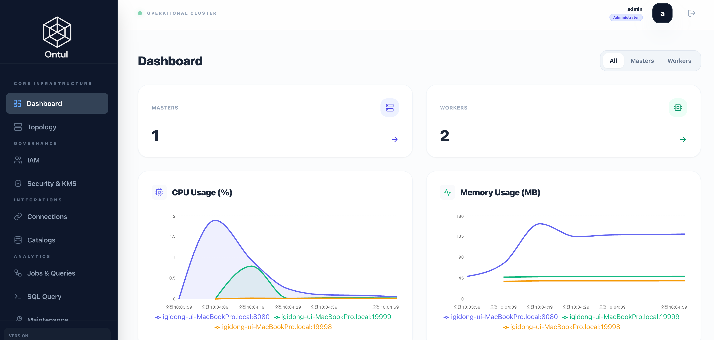

Getting Started
This shows how to install Ontul on local to experience it quickly.
Prerequisites
Because Ontul is written in Java, Java 17 needs to be installed on local.
Install Ontul on Local
Ontul distribution can be downloaded like this.
curl -L -O https://github.com/cloudcheflabs/ontul-pack/releases/download/ontul-archive/ontul-1.0.0.tar.gz
And untar the downloaded package.
Run Example Server and Run Examples
There are examples in examples directory.
This is interactive processing using Ontul SDK in java.
import com.cloudcheflabs.ontul.sdk.DataFrame;
import com.cloudcheflabs.ontul.sdk.OntulSession;
import com.cloudcheflabs.ontul.sdk.Source;
import org.apache.arrow.vector.VectorSchemaRoot;
import java.util.List;
/**
* Ontul Remote Mode Example — Programmable DataFrame API.
*
* Demonstrates: source → filter → select → join → groupBy → agg → orderBy → limit
* All operations are composed as DataFrame chains, not raw SQL strings.
*
* Run:
* examples/bin/run-example-remote-java.sh
*/
public class RemoteQueryExample {
public static void main(String[] args) throws Exception {
OntulSession session = OntulSession.builder()
.master("localhost", 47470)
.build();
System.out.println("=== Ontul DataFrame API Example ===\n");
// -------------------------------------------------------
// 1. Basic DataFrame — source → select → orderBy → limit
// -------------------------------------------------------
System.out.println("--- 1. Nations (select + orderBy + limit) ---");
var nations = session.source(Source.sql("SELECT * FROM tpch.tiny.nation"))
.select("n_nationkey", "n_name", "n_regionkey")
.orderBy("n_nationkey")
.limit(10);
printDataFrame(nations);
// -------------------------------------------------------
// 2. DataFrame JOIN — nation.join(region)
// -------------------------------------------------------
System.out.println("\n--- 2. Nation-Region JOIN (df.join) ---");
var nation = session.source(Source.sql("SELECT * FROM tpch.tiny.nation"))
.select("n_name", "n_regionkey");
var region = session.source(Source.sql("SELECT * FROM tpch.tiny.region"))
.select("r_regionkey", "r_name");
var nationRegion = nation.join(region, "l.n_regionkey = r.r_regionkey")
.select("n_name", "r_name")
.orderBy("r_name");
printDataFrame(nationRegion);
// -------------------------------------------------------
// 3. filter → join → select — Customers in ASIA
// -------------------------------------------------------
System.out.println("\n--- 3. Customers in ASIA (filter + join + orderBy) ---");
var asiaRegion = session.source(Source.sql("SELECT * FROM tpch.tiny.region"))
.filter("r_name = 'ASIA'")
.select("r_regionkey");
var asiaNation = session.source(Source.sql("SELECT * FROM tpch.tiny.nation"))
.join(asiaRegion, "l.n_regionkey = r.r_regionkey")
.select("n_nationkey", "n_name");
var asiaCustomers = session.source(Source.sql("SELECT * FROM tpch.tiny.customer"))
.select("c_name", "c_acctbal", "c_nationkey")
.join(asiaNation, "l.c_nationkey = r.n_nationkey")
.select("c_name", "c_acctbal", "n_name")
.orderBy("c_acctbal", false)
.limit(10);
printDataFrame(asiaCustomers);
// -------------------------------------------------------
// 4. groupBy + agg — Nation count per region
// -------------------------------------------------------
System.out.println("\n--- 4. Nations per Region (groupBy + agg) ---");
var nationsPerRegion = nation.join(region, "l.n_regionkey = r.r_regionkey")
.select("r_name")
.groupBy("r_name")
.agg("COUNT(*) AS nation_count")
.orderBy("nation_count", false);
printDataFrame(nationsPerRegion);
// -------------------------------------------------------
// 5. filter + limit — High-value customers
// -------------------------------------------------------
System.out.println("\n--- 5. High-Value Customers (filter + select + limit) ---");
var highValue = session.source(Source.sql("SELECT * FROM tpch.tiny.customer"))
.filter("c_acctbal > 9000")
.select("c_custkey", "c_name", "c_acctbal")
.orderBy("c_acctbal", false)
.limit(10);
printDataFrame(highValue);
// -------------------------------------------------------
// 6. Cross-catalog DataFrame — TPC-DS item
// -------------------------------------------------------
System.out.println("\n--- 6. TPC-DS Items (cross-catalog source) ---");
var items = session.source(Source.sql("SELECT * FROM tpcds.tiny.item"))
.select("i_item_sk", "i_item_id", "i_item_desc")
.limit(5);
printDataFrame(items);
session.close();
System.out.println("\n=== Done ===");
}
@SuppressWarnings("rawtypes")
private static void printDataFrame(DataFrame df) {
long start = System.currentTimeMillis();
try {
List<VectorSchemaRoot> batches = df.execute();
int totalRows = 0;
boolean headerPrinted = false;
for (VectorSchemaRoot root : batches) {
if (!headerPrinted && root.getRowCount() > 0) {
StringBuilder header = new StringBuilder();
for (var field : root.getSchema().getFields()) {
if (header.length() > 0) header.append(" | ");
header.append(String.format("%-20s", field.getName()));
}
System.out.println(header);
System.out.println("-".repeat(header.length()));
headerPrinted = true;
}
for (int row = 0; row < root.getRowCount(); row++) {
StringBuilder sb = new StringBuilder();
for (int col = 0; col < root.getFieldVectors().size(); col++) {
if (col > 0) sb.append(" | ");
Object val = root.getFieldVectors().get(col).getObject(row);
sb.append(String.format("%-20s", val));
}
System.out.println(sb);
}
totalRows += root.getRowCount();
root.close();
}
long elapsed = System.currentTimeMillis() - start;
System.out.printf("(%d rows, %dms)%n", totalRows, elapsed);
} catch (Exception e) {
System.err.println("DataFrame execution failed: " + e.getMessage());
}
}
}
Similar codes in python look like.
#!/usr/bin/env python3
"""
Ontul Remote Mode Example — Server-side distributed execution via Python.
All operations are composed as SQL and executed on the server (Master → Workers).
Results are returned as PyArrow Tables / Pandas DataFrames.
Run:
examples/bin/run-example-python.sh
"""
import sys
import os
import time
sdk_path = os.path.join(os.path.dirname(__file__), '..', '..', 'lib', 'python')
if os.path.exists(sdk_path):
sys.path.insert(0, sdk_path)
from ontul.session import OntulSession
class RemoteDataFrame:
"""Thin wrapper that composes SQL lazily — all execution happens server-side."""
def __init__(self, session, sql):
self._session = session
self._sql = sql
def select(self, *cols):
return RemoteDataFrame(self._session,
f"SELECT {', '.join(cols)} FROM ({self._sql}) AS _df")
def filter(self, condition):
return RemoteDataFrame(self._session,
f"SELECT * FROM ({self._sql}) AS _df WHERE {condition}")
def join(self, other, condition, join_type="INNER"):
return RemoteDataFrame(self._session,
f"SELECT * FROM ({self._sql}) AS l {join_type} JOIN ({other._sql}) AS r ON {condition}")
def group_by(self, *cols):
self._group_cols = list(cols)
return self
def agg(self, *exprs):
group_cols = getattr(self, '_group_cols', [])
group_clause = ', '.join(group_cols)
select_cols = group_clause + ', ' + ', '.join(exprs) if group_cols else ', '.join(exprs)
sql = f"SELECT {select_cols} FROM ({self._sql}) AS _df"
if group_cols:
sql += f" GROUP BY {group_clause}"
return RemoteDataFrame(self._session, sql)
def order_by(self, col, ascending=True):
direction = "ASC" if ascending else "DESC"
return RemoteDataFrame(self._session,
f"SELECT * FROM ({self._sql}) AS _df ORDER BY {col} {direction}")
def limit(self, n):
return RemoteDataFrame(self._session,
f"SELECT * FROM ({self._sql}) AS _df LIMIT {n}")
def to_pandas(self):
return self._session.source(self._sql).to_pandas()
def to_arrow(self):
return self._session.source(self._sql)
def sql(self):
return self._sql
def source(session, table_or_sql):
"""Create a RemoteDataFrame from a table name or SQL."""
if ' ' in table_or_sql.strip():
return RemoteDataFrame(session, table_or_sql)
return RemoteDataFrame(session, f"SELECT * FROM {table_or_sql}")
def print_df(pdf, title, max_rows=25):
print(f"\n--- {title} ---")
if pdf.empty:
print("(empty)")
return
print(pdf.head(max_rows).to_string(index=False))
print(f"({len(pdf)} rows)")
def main():
session = OntulSession()
print("=== Ontul Server-Side Distributed DataFrame Example (Python) ===")
passed = 0
total = 6
try:
# 1. source → select → orderBy → limit (server-side)
start = time.time()
result = source(session, "tpch.tiny.nation") \
.select("n_nationkey", "n_name", "n_regionkey") \
.order_by("n_nationkey") \
.limit(10) \
.to_pandas()
print_df(result, "1. Nations (select + orderBy + limit)")
print(f" ({time.time() - start:.3f}s)")
passed += 1
except Exception as e:
print(f"\n--- 1. Nations --- FAILED: {e}")
try:
# 2. DataFrame JOIN — nation.join(region) (server-side)
start = time.time()
nation = source(session, "tpch.tiny.nation").select("n_name", "n_regionkey")
region = source(session, "tpch.tiny.region").select("r_regionkey", "r_name")
result = nation.join(region, "l.n_regionkey = r.r_regionkey") \
.select("n_name", "r_name") \
.order_by("r_name") \
.to_pandas()
print_df(result, "2. Nation-Region JOIN (server-side)")
print(f" ({time.time() - start:.3f}s)")
passed += 1
except Exception as e:
print(f"\n--- 2. Nation-Region JOIN --- FAILED: {e}")
try:
# 3. filter → join → join → select — Customers in ASIA (server-side)
start = time.time()
asia_region = source(session, "tpch.tiny.region") \
.filter("r_name = 'ASIA'") \
.select("r_regionkey")
asia_nation = source(session, "tpch.tiny.nation") \
.join(asia_region, "l.n_regionkey = r.r_regionkey") \
.select("n_nationkey", "n_name")
result = source(session, "tpch.tiny.customer") \
.select("c_name", "c_acctbal", "c_nationkey") \
.join(asia_nation, "l.c_nationkey = r.n_nationkey") \
.select("c_name", "c_acctbal", "n_name") \
.order_by("c_acctbal", ascending=False) \
.limit(10) \
.to_pandas()
print_df(result, "3. Customers in ASIA (filter + join + join)")
print(f" ({time.time() - start:.3f}s)")
passed += 1
except Exception as e:
print(f"\n--- 3. Customers in ASIA --- FAILED: {e}")
try:
# 4. groupBy + agg — Nation count per region (server-side)
start = time.time()
nation = source(session, "tpch.tiny.nation").select("n_name", "n_regionkey")
region = source(session, "tpch.tiny.region").select("r_regionkey", "r_name")
result = nation.join(region, "l.n_regionkey = r.r_regionkey") \
.select("r_name") \
.group_by("r_name") \
.agg("COUNT(*) AS nation_count") \
.order_by("nation_count", ascending=False) \
.to_pandas()
print_df(result, "4. Nations per Region (groupBy + agg)")
print(f" ({time.time() - start:.3f}s)")
passed += 1
except Exception as e:
print(f"\n--- 4. Nations per Region --- FAILED: {e}")
try:
# 5. filter + select + limit — High-value customers (server-side)
start = time.time()
result = source(session, "tpch.tiny.customer") \
.filter("c_acctbal > 9000") \
.select("c_custkey", "c_name", "c_acctbal") \
.order_by("c_acctbal", ascending=False) \
.limit(10) \
.to_pandas()
print_df(result, "5. High-Value Customers (filter + select)")
print(f" ({time.time() - start:.3f}s)")
passed += 1
except Exception as e:
print(f"\n--- 5. High-Value Customers --- FAILED: {e}")
try:
# 6. Cross-catalog — TPC-DS items (server-side)
start = time.time()
result = source(session, "tpcds.tiny.item") \
.select("i_item_sk", "i_item_id", "i_item_desc") \
.limit(5) \
.to_pandas()
print_df(result, "6. TPC-DS Items (cross-catalog)")
print(f" ({time.time() - start:.3f}s)")
passed += 1
except Exception as e:
print(f"\n--- 6. TPC-DS Items --- FAILED: {e}")
session.close()
print(f"\n=== Done ({passed}/{total} passed) ===")
if __name__ == "__main__":
main()
You can also run queries through JDBC and Arrow Flight in java.
import java.sql.*;
import java.util.Properties;
/**
* Ontul JDBC Example — Query TPC-H / TPC-DS via Arrow Flight SQL JDBC driver.
*
* Uses standard JDBC API with Arrow Flight SQL JDBC driver.
* Connection URL: jdbc:arrow-flight-sql://host:port
*
* Run:
* examples/bin/run-example-jdbc-java.sh
*/
public class JdbcQueryExample {
private static final String JDBC_URL = "jdbc:arrow-flight-sql://localhost:47470";
public static void main(String[] args) throws Exception {
String token = System.getProperty("ontul.user.token");
Properties props = new Properties();
props.put("user", "Token " + token);
props.put("password", "");
props.put("useEncryption", "false");
// Load driver explicitly
Class.forName("org.apache.arrow.driver.jdbc.ArrowFlightJdbcDriver");
System.out.println("=== Ontul JDBC Example ===\n");
try (Connection conn = DriverManager.getConnection(JDBC_URL, props)) {
System.out.println("Connected via JDBC: " + JDBC_URL);
// 1. Simple query
System.out.println("\n--- 1. TPC-H Nations (JDBC) ---");
executeAndPrint(conn, "SELECT * FROM tpch.tiny.nation ORDER BY n_nationkey LIMIT 10");
// 2. JOIN
System.out.println("\n--- 2. TPC-H Nation-Region Join (JDBC) ---");
executeAndPrint(conn,
"SELECT n.n_name AS nation, r.r_name AS region " +
"FROM tpch.tiny.nation n " +
"JOIN tpch.tiny.region r ON n.n_regionkey = r.r_regionkey " +
"ORDER BY r.r_name, n.n_name");
// 3. Cross-catalog
System.out.println("\n--- 3. TPC-H Customers in ASIA (JDBC) ---");
executeAndPrint(conn,
"SELECT c.c_name, c.c_acctbal, n.n_name " +
"FROM tpch.tiny.customer c " +
"JOIN tpch.tiny.nation n ON c.c_nationkey = n.n_nationkey " +
"JOIN tpch.tiny.region r ON n.n_regionkey = r.r_regionkey " +
"WHERE r.r_name = 'ASIA' " +
"ORDER BY c.c_acctbal DESC " +
"LIMIT 5");
// 4. Metadata — DatabaseMetaData
System.out.println("\n--- 4. JDBC Metadata ---");
DatabaseMetaData meta = conn.getMetaData();
System.out.println(" Driver: " + meta.getDriverName() + " " + meta.getDriverVersion());
System.out.println(" URL: " + meta.getURL());
// 5. PreparedStatement
System.out.println("\n--- 5. PreparedStatement ---");
try (PreparedStatement ps = conn.prepareStatement(
"SELECT n_name, n_regionkey FROM tpch.tiny.nation WHERE n_regionkey = 2 ORDER BY n_name")) {
try (ResultSet rs = ps.executeQuery()) {
printResultSet(rs);
}
}
}
System.out.println("\n=== Done ===");
}
private static void executeAndPrint(Connection conn, String sql) {
long start = System.currentTimeMillis();
try (Statement stmt = conn.createStatement();
ResultSet rs = stmt.executeQuery(sql)) {
int rows = printResultSet(rs);
long elapsed = System.currentTimeMillis() - start;
System.out.printf("(%d rows, %dms)%n", rows, elapsed);
} catch (Exception e) {
System.err.println("Query failed: " + e.getMessage());
}
}
private static int printResultSet(ResultSet rs) throws SQLException {
ResultSetMetaData meta = rs.getMetaData();
int colCount = meta.getColumnCount();
// Header
StringBuilder header = new StringBuilder();
for (int i = 1; i <= colCount; i++) {
if (i > 1) header.append(" | ");
header.append(String.format("%-20s", meta.getColumnLabel(i)));
}
System.out.println(header);
System.out.println("-".repeat(header.length()));
// Rows
int rowCount = 0;
while (rs.next()) {
StringBuilder row = new StringBuilder();
for (int i = 1; i <= colCount; i++) {
if (i > 1) row.append(" | ");
row.append(String.format("%-20s", rs.getString(i)));
}
System.out.println(row);
rowCount++;
}
return rowCount;
}
}
And in python.
#!/usr/bin/env python3
"""
Ontul Arrow Flight SQL Example — Direct Flight SQL protocol in Python.
Uses PyArrow Flight client directly (not the Ontul Python SDK)
to demonstrate low-level Arrow Flight SQL interaction.
Run:
examples/bin/run-example-flight-python.sh
"""
import os
import sys
import time
import pyarrow as pa
import pyarrow.flight as flight
def create_client():
"""Create Arrow Flight client with token auth."""
host = os.environ.get("ONTUL_HOST", "localhost")
port = int(os.environ.get("ONTUL_PORT", "47470"))
token = os.environ.get("ONTUL_USER_TOKEN")
if not token:
print("ERROR: ONTUL_USER_TOKEN must be set")
sys.exit(1)
client = flight.FlightClient(f"grpc://{host}:{port}")
auth_header = f"Token {token}"
options = flight.FlightCallOptions(
headers=[(b"authorization", auth_header.encode())]
)
return client, options
def execute_query(client, options, sql):
"""Execute SQL via Flight protocol and return PyArrow Table."""
descriptor = flight.FlightDescriptor.for_command(sql.encode())
info = client.get_flight_info(descriptor, options)
if not info.endpoints:
return pa.table({})
ticket = info.endpoints[0].ticket
reader = client.do_get(ticket, options)
return reader.read_all()
def print_table(table, title):
"""Pretty-print a PyArrow Table."""
print(f"\n--- {title} ---")
columns = table.schema.names
if not columns:
print("(empty)")
return
data = table.to_pydict()
widths = {}
for col in columns:
vals = [str(v) for v in data[col]]
widths[col] = min(max(len(col), max((len(v) for v in vals), default=0)), 25)
header = " | ".join(col.ljust(widths[col]) for col in columns)
print(header)
print("-" * len(header))
for i in range(table.num_rows):
row = " | ".join(str(data[col][i])[:widths[col]].ljust(widths[col]) for col in columns)
print(row)
print(f"({table.num_rows} rows)")
def run_query(client, options, sql, title):
"""Run query with error handling and timing."""
start = time.time()
try:
result = execute_query(client, options, sql)
print_table(result, title)
elapsed = time.time() - start
print(f" ({elapsed:.3f}s)")
return True
except Exception as e:
print(f"\n--- {title} ---")
print(f" Query failed: {str(e)[:120]}")
return False
def main():
client, options = create_client()
print("=== Ontul Arrow Flight SQL Example (Python) ===")
passed = 0
total = 5
# 1. Simple query
if run_query(client, options,
"SELECT * FROM tpch.tiny.nation ORDER BY n_nationkey LIMIT 10",
"1. TPC-H Nations"):
passed += 1
# 2. JOIN
if run_query(client, options, """
SELECT n.n_name AS nation, r.r_name AS region
FROM tpch.tiny.nation n
JOIN tpch.tiny.region r ON n.n_regionkey = r.r_regionkey
ORDER BY r.r_name, n.n_name
""", "2. TPC-H Nation-Region Join"):
passed += 1
# 3. Cross-catalog
if run_query(client, options, """
SELECT c.c_name, c.c_acctbal, n.n_name
FROM tpch.tiny.customer c
JOIN tpch.tiny.nation n ON c.c_nationkey = n.n_nationkey
JOIN tpch.tiny.region r ON n.n_regionkey = r.r_regionkey
WHERE r.r_name = 'ASIA'
ORDER BY c.c_acctbal DESC
LIMIT 5
""", "3. TPC-H Customers in ASIA"):
passed += 1
# 4. Schema inspection via Flight
print(f"\n--- 4. Schema Inspection ---")
try:
desc = flight.FlightDescriptor.for_command(
b"SELECT * FROM tpch.tiny.nation LIMIT 1")
info = client.get_flight_info(desc, options)
schema = info.schema
print(f" Schema of tpch.tiny.nation:")
for field in schema:
print(f" {field.name}: {field.type}")
passed += 1
except Exception as e:
print(f" Failed: {str(e)[:100]}")
# 5. Streaming read — process batches
print(f"\n--- 5. Streaming Batch Read ---")
try:
start = time.time()
desc = flight.FlightDescriptor.for_command(
b"SELECT n_name, n_regionkey FROM tpch.tiny.nation ORDER BY n_name")
info = client.get_flight_info(desc, options)
ticket = info.endpoints[0].ticket
reader = client.do_get(ticket, options)
total_rows = 0
batch_count = 0
for batch in reader:
batch_count += 1
total_rows += batch.data.num_rows
elapsed = time.time() - start
print(f" Received {batch_count} batch(es), {total_rows} total rows ({elapsed:.3f}s)")
passed += 1
except Exception as e:
print(f" Failed: {str(e)[:100]}")
client.close()
print(f"\n=== Done ({passed}/{total} passed) ===")
if __name__ == "__main__":
main()
Run the following to run example servers and run the examples above.
Admin UI
Admin UI can be accessed. Because run-all-examples.sh has already changed the initial password, you can login with admin/Admin123!.
The initial admin user and password is
admin/admin, after that, you need to change the initial password.

Stop Example Servers
Stop the running example servers.